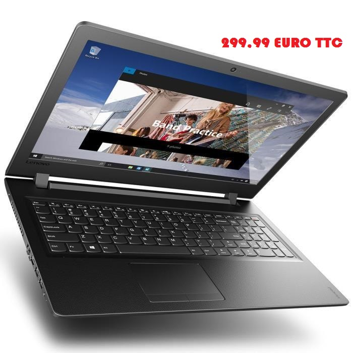

Lenovo PC Portable Ideapad 110-15IBR
400€
PROMO !! 299,99 €

Descriptif : Lenovo PC Portable Ideapad 110-15IBR - 15"6 - RAM
Haut de page ▲
Ordinateur Portable Lenovo IdeaPad 110-15IBR avec écran large 15,6 " HD 1366 x 768 - Processeur AMD E2 7110- Mémoire 4 Go -Stockage 1 To 5400 trs/min -AMD Radeon R2 -Graveur DVD +/- RW- Wifi - Bluetooth - 1x USB 3.0 + 1x USB 2.0, lecteur multicarte 2-en-1 (SD, MMC), prise mixte écouteurs/ microphone - Ethernet RJ-45 HDMI - Ethernet 10/100 -Caméra 0.3 Mp - Windows 10 -Pavé tactile - Garantie du fabricant 2 ans
Informations générales sur le produit
Marque LENOVO
Nom du produit Lenovo PC Portable Ideapad 110-15IBR - 15"6 - RAM
Catégorie ORDINATEUR PORTABLE
Général
Système d'exploitation Windows 10 Edition Familiale 64 bits - français
Type de Produit Ordinateur portable
Processeur - Chipset'
CPU AMD E2 7110 - 1.8 GHz
Nombre de coeurs Quadricoeur
Cache L2 - 2 Mo
Technologie 64 bits Oui
Fonctions Contrôleur de mémoire intégré
Affichage
Type 15.6" - TN
Technologie de rétroéclairage LCD Rétroéclairage par LED
Résolution 1366 x 768 (HD)
Fonctions Reflet
Grand écran Oui
Rapport d'image 16:9
Stockage
Lecteur optique Graveur de DVD
Stockage principal 1 To HDD SATA 6Gb-s - 5400 tours-min
Mémoire
RAM 4 Go (1 x 4 Go)
Technologie DDR3L SDRAM
Facteur de Forme SO DIMM 204 broches
Vitesse 1600 MHz - PC3L-12800
RAM max prise en charge 8 Go
Emplacementsvides 0
Nbre de logements 1
Audio & vidéo
Processeur graphique AMD Radeon R2
Caméra Oui
Résolution 0,3 Mégapixel
Son Haut-parleur, microphone
Communications
Sans fil Bluetooth 4.0, 802.11a-b-g-n-ac
Interface réseau 10-100 Ethernet
Contrôleur sans fil Realtek RTL8821AE
Connexions & extension
Lecteur de carte mémoire 4 en 1 (carte SD, MultiMediaCard, carte SDHC, carte SDXC)
Interfaces USB 3.0
USB 2.0
HDMI
LAN
Prise combo casque-microphone
Entrée
Type Clavier, touchpad
Caractéristiques Clavier numérique intégré
Disposition du clavier Français
Batterie
Technologie 3 éléments Lithium Ion
Capacité 24 Wh
Durée de fonctionnement Jusqu'à 3 heures
Durée de vie de la batterie Lecture vidéo: jusqu'à 3 heures
Divers
Couleur Noir ébène
Caractéristiques Mini emplacement de verrouillage (câble de verrouillage vendu séparément)
Localisation Français - France
Dimensions et poids
Poids 2.2 kg
Dimensions (LxPxH) 37.8 cm x 26.5 cm x 2.29 cm
Adaptateur CA
Entrée CA 120-230 V (50-60 Hz)
Sortie 45 Watt, 20 V, 2.25 A
- CPU : AMD E2 7110 - 1.8 GHz
- 15.6" - TN - 1366 x 768 (HD)
- RAM : 4 Go (1 x 4 Go)
- 1 To HDD SATA 6Gb-s - 5400 tours-min
- Processeur graphique : AMD Radeon R2
- Interfaces : USB 3.0, USB 2.0, HDMI, LAN, Prise combo casque-microphone
- fil : Bluetooth 4.0, 802.11a-b-g-n-ac
- Système d'exploitation : Windows 10 Edition Familiale 64 bits - français
- Couleur : Noir ébène